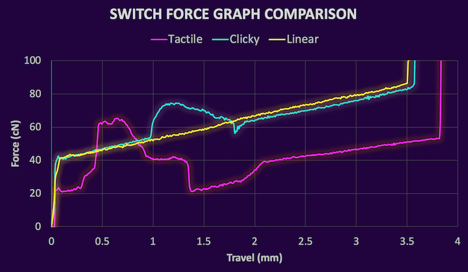
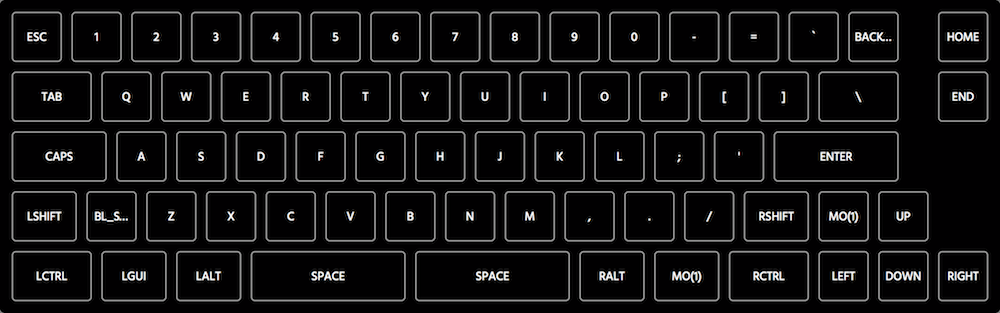
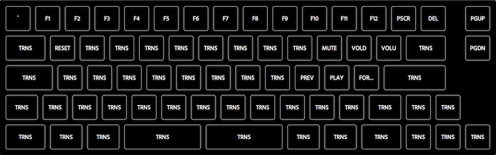
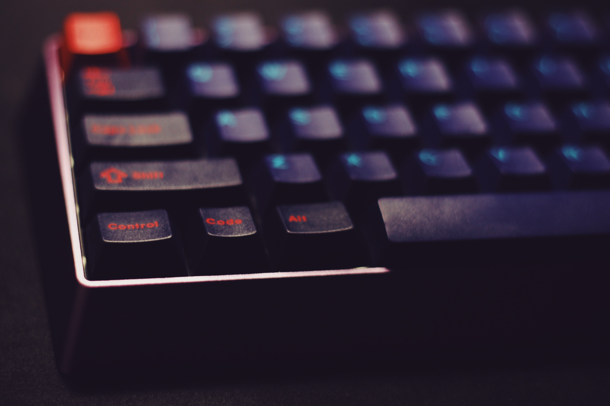
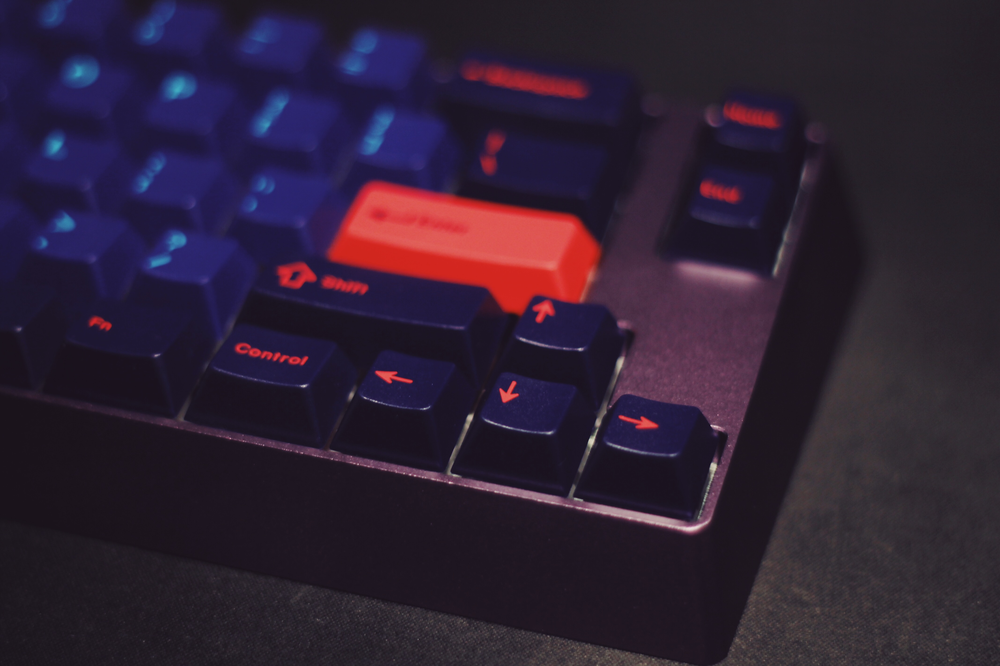
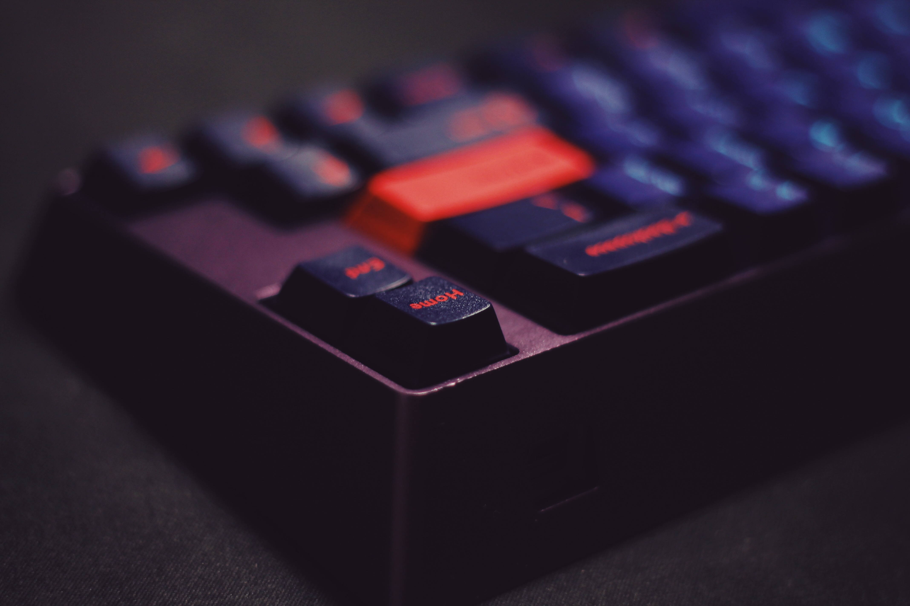
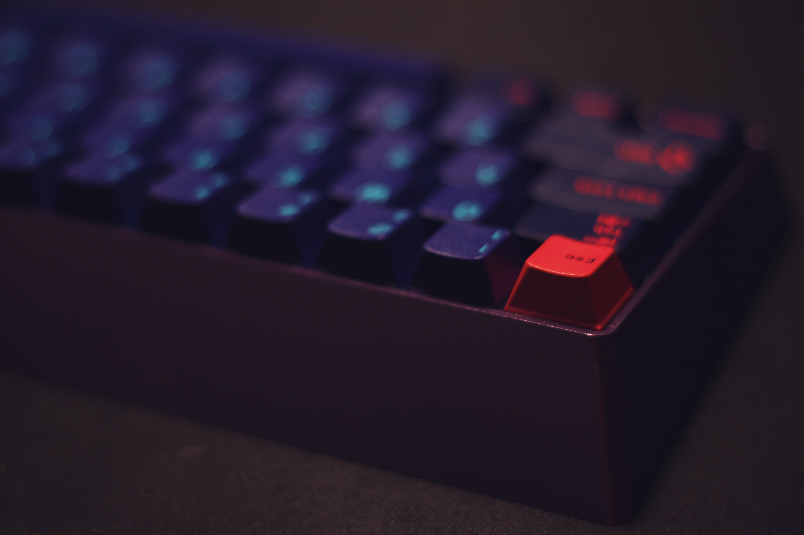

A staple for anyone who uses a computer for any meaningful amount of time, keyboards provide the most important way we interact with our most powerful devices. Whether we tick quietly on a modern thin laptop or thock emphatically on an ancient beamspring 1, we leverage the same devices for hours each day without giving them the assiduity they deserve. However, what if that wasn’t the case? Enter the mechanical keyboard.
While technically all keyboards are mechanical (as our hands are also technically mechanical2), mechanical keyboards are narrowly defined as a keyboard which uses an individual spring and switch for each key3.
There are many different variants of switches available, of varying makes and qualities. These are differentiated by weight4 and tactility5.
Three categories dominate the selection: linear, tactile, and clicky 6. It is easy to see the difference between these types of switches through their various force graphs. Here is an approximation of the way the three main switches actuate:

Tactile: Kailh BOX Royal, Clicky: Kailh Sage, Linear: Kailh Berry
Source: HaaTa’s detailed research
Linear switches exhibit the same force delta for the duration of the press. Tactile and clicky switches both demonstrate deltas that change during the press, thus creating the feeling of a bump. Generally, this bump indicates that the switch has been activated. This is the main advantage mechanical keyboards have over traditional rubber domes: longer, smoother key travel punctuated by a precise moment of activation. This means there is room to continue pressing after the keypress, which means you do not have to fully depress a key to activate it. As a result, your fingers never have to exert more than the minimum amount of force, thus theoretically reducing finger stress while typing.
While there are many readily available boards on the market, there is something to be said about selecting parts and assembling a device, especially one in use all day every day. Several different vendors design and manufacture premium quality mechanical keyboard parts that are not found in any mass-produced board. Since the part designs are standardized by ISO (and subsequently ANSI), it is not very troublesome to use parts from several different vendors.
The most visible part of a keyboard is the keycaps. These are the plastic tops that attach to the switches and display various legends7. There are many great sets and designers, but Mito’s Laser caught my eye.
This set is manufactured in Germany by an electronic design company called GMK. The material used is ABS, an impact-resistant plastic. The legends are not printed with ink: rather they are molded into the plastic in a process called double-shot molding 8.
This means the legends will never wear down. The thicker plastic used in the molding process also means the keys are more rigid, which provides a more precise feeling typing experience. The plastic is also textured, which makes it preferable to type on.
The second most visible part of a keyboard is the case. This houses the PCB and provides stability so that the keyboard does not slide around on the desk. They also can be made to look very unique and nice, which makes the keyboard stand out even more. I went with the KBDFans model 661, an updated take on the model 66 case. Here is a render of the design:
The case uses a separate top and bottom part to sandwich the plate that holds the switches:
Since this is milled out of aluminum, it can be anodized any color — most importantly, dark purple.
While a PCB is not a requirement to build a keyboard9, it makes it far easier to do so. I went with the original KBD66 PCB. It also already has the SMD components pre-soldered so only switches need to be added. The only downside is that the switch pads are inverted from the normal orientation such that the switches are oriented upside down.
It supports several useful layouts, programmable using the open-source QMK Firmware:
For this build, I chose a non-split left and right shift and a standard ANSI enter key. Split spacebar layouts are not possible with the plate that the KBD 661 case uses.
Since switches only attach to a keycap in the very center, longer keys require a leveling mechanism (colloquially: stabilizer) to balance properly and also actuate when not pressed in the exact center. The left shift key and the space bar are notable long keys that require stabilizers.
Cherry, another German electronics manufacturer, makes high-quality stabilizers that screw into the PCB in lieu of clipping into it. This gives the stabilizer added stability in addition to its intended purpose. Applying a lubricant like dielectric grease can help reduce the added friction stabilizers cause during the keypress.
Since this keyboard will mainly be used in an office environment, a clicky option is not a reasonable choice. Since one of the main advantages of a mechanical board is precise tactility, I chose to use a tactile switch in this build. The baseline tactile switch is Cherry’s MX Brown switch; however, this tends to feel scratchy and does not have a very pronounced bump. On the other end of the spectrum, ZealPC manufactures high-end switches using Gateron housings. Their switches use different springs, leaves, and stems than MX Browns, which makes them far smoother and more tactile.
The quality difference is evinced in the force graphs of the two switches:
Here is how the ZealPC switch compares with the first three switches above:
Overall it performs admirably: smooth like a good linear while also decently tactile and quiet.
There are two options for reducing the noise from non-clicky switches. O-rings are cheap, but they reduce overall key travel and make the downstroke feel mushy. The alternative solution are QMK’s silencing clips. These cost more, but reduce noise without the adverse effects O-rings. Since the Laser keycaps are Cherry profile, QMK Clips will work without any problems.
Here is a parts list for this build10:
| Part | Model | Price |
|---|---|---|
| Case/PCB | KBD 661 | $160 |
| Stabilizers | GMK Screw-in | $18 |
| Keycaps | GMK Laser | $180 |
| Switches | Zealio 65g | $60 |
| Silencers | QMK Clips | $30 |
| Total | $448 |
Now, let’s put it all together!
Before beginning, I like to lay out all of the parts and marvel at how nice it is I can get a brick of aluminum shipped from China on my doorstep in 3 days.
Without further ado, let's get to work!
The first step is to add the switches to the plate since the plate helps keep the switches stable and aligned.
The Zealio switches support PCB mounting; they do not need a plate. They have additional legs that allow them to sit flush with the PCB:
However, the plate adds additional stability on top of keeping things organized neatly, so we will use the provided stamped aluminum plate.
Note that the KBD 660 PCB orients the switches upside down, so the underside of the plate should look like this:
For the longer open parts of the plate that allow for multiple positions, we leave the switches out until we can fit them in with the plate before soldering to ensure they are lined up correctly.
Finally, we add the silencing clips over the top of each switch. This will cut down the noise from each keystroke and protect the switches from damage.
The next step is to prepare the PCB.
To prepare our PCB for switch installation, we need to add the PCB mounted leveling mechanism.
The stabilizers are essential to get right to ensure the longer keys are quiet and comfortable to use. To optimize the stability and noise of the Cherry stabilizers, we use a medium viscosity plastic lubricant like dielectric grease11.
All parts of the stabilizers that move have grease on them. This prevents the parts from clicking together and echoing as well as ensure smooth vertical travel.
The most difficult part is lining up all of the switch legs to their holes in the PCB. Slowly lower the PCB on top of the back of the switches until the switch housings are flush against the PCB:
To line up the switches we left out earlier, use the relevant keycaps to ensure the switches are in the proper places:
Once the switches are all pressed into the PCB, we can carefully begin to solder all of them into their respective places. This build does not include LEDs, but they would be soldered in this stage too if it included some.
Here is a photo of the finished board I used to troubleshoot some issues12:
Once we have soldered in all of the parts, we can start to build and flash the firmware onto the atmega32u4 controller.
The keyboard supports the open-source QMK Firmware. We can leverage qmkeyboard.cn to design and compile our firmware online to avoid writing C like we are in the 90s13. I used the following keymaps:


In this example, the top image is layer 0 and the bottom image is layer 1. The split keys are not used. Anything labeled TRNS is transparent and falls back to the previous layers14. The Mo(1) toggle on layer 0 acts like an Fn key that allows us to access l2 functions from l1 while it is pressed15. Once we download the compiled firmware, we need to flash the controller.
To do this with a semi-GIU, we can use QMK Toolbox.
To do this, select our compiled firmware in QMK Toolbox. Use the reset button on the back of the PCB and hold space and b to enter the bootloader mode so we can flash this firmware. If everything goes smoothly, the output should be:
*** KBDFans - KBD66 connected -- 0xFEED:0xBD66
*** KBDFans - KBD66 disconnected -- 0xFEED:0xBD66
*** DFU device connected
*** Attempting to flash, please don't remove device
>>> dfu-programmer atmega32u4 erase --force
Erasing flash... Success
Checking memory from 0x0 to 0x6FFF... Empty.
>>> dfu-programmer atmega32u4 flash /Users/chris/Downloads/661.hex
Checking memory from 0x0 to 0x61FF... Empty.
0% 100% Programming 0x6200 bytes...
[>>>>>>>>>>>>>>>>>>>>>>>>>>>>>>>>] Success
0% 100% Reading 0x7000 bytes...
[>>>>>>>>>>>>>>>>>>>>>>>>>>>>>>>>] Success
Validating... Success
0x6200 bytes written into 0x7000 bytes memory (87.50%).
>>> dfu-programmer atmega32u4 reset
Now, before we assemble the rest of the case, we want to test to make sure every key works properly. I like to do this with Elite Keyboard’s diagnostic software called Switch Hitter. It not only helps track whether a switch is working but it also can detect chatter from electrical interference or faulty switches.
Once everything passes the requisite tests, we can assemble the case.
Finally, we can break out our keycaps and attach them to the board. This is the fun part as well as the most rewarding.
The three-piece sandwich case is easy enough to assemble. Simply attach the plate to the bottom case, cover it with the top case, and add some screws.
Voila!
Right-click on these photos to view them at full resolution16:




Discussion: /r/mk, Hacker News | View as: PDF, Markdown
https://deskthority.net/wiki/Beam_spring ↩︎
A mechanical system manages power to accomplish a task that involves forces and movement. ↩︎
Generally, this is compared against mass-produced rubber dome keyboards, which use a sheet of rubber pressed into domes to handle switch actuation. While good rubber dome keyboards exist, few are worth using. ↩︎
That is, the force required to actuate or fully depress a switch. ↩︎
That is, nonlinear force delta for the duration of the press. ↩︎
Clicky switches are generally tactile too, though that is not always the case. BOX White switches are linear but use a click bar to make a click. ↩︎
Legends are the letters and symbols on top of the keycaps that indicate what the switch is for. ↩︎
/u/ripster55 explains this process in detail on Reddit ↩︎
It is possible to handwire and use a USB controller to build a working device. ↩︎
Prices include tax and shipping. ↩︎
I used Finish Line Extreme Fluoro ↩︎
There were not any; I thought the diode above Del would cause problems. ↩︎
Secretly, I am just scared of it.↩︎
Note that I added a reset key on Q on l1 so that we can access the bootloader in case something goes wrong, so we don’t have to open the keyboard up again later. ↩︎